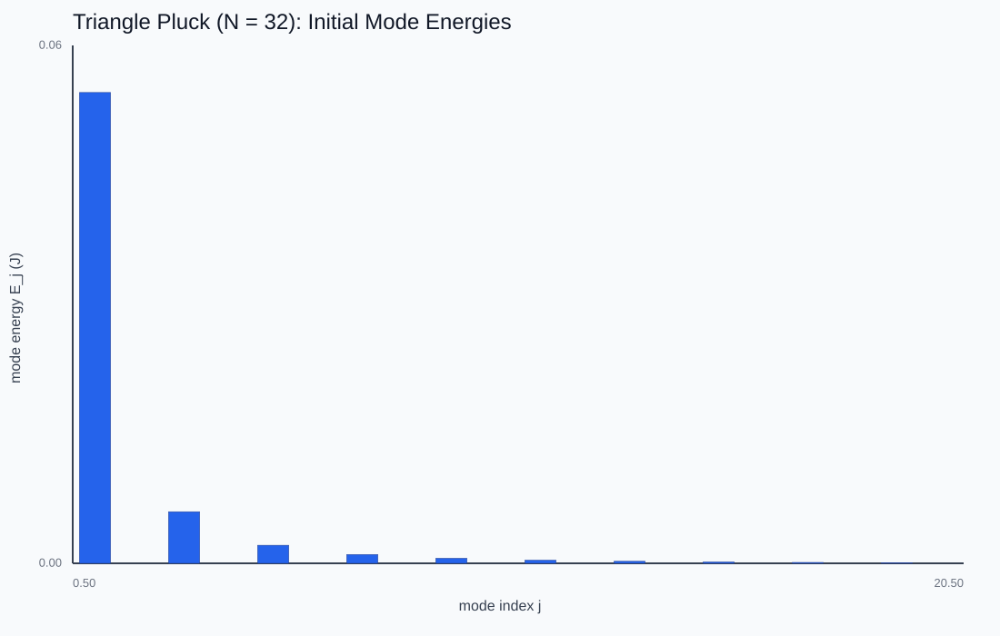
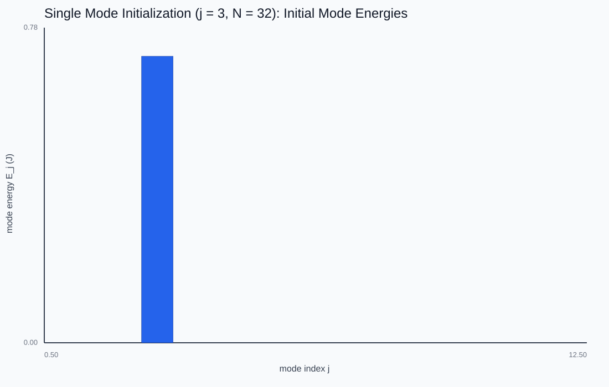
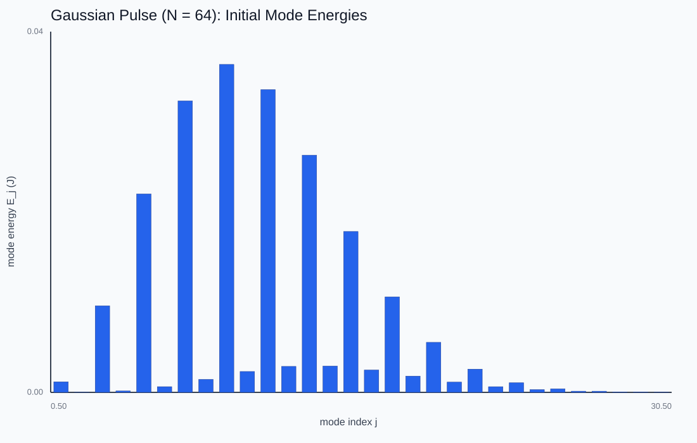
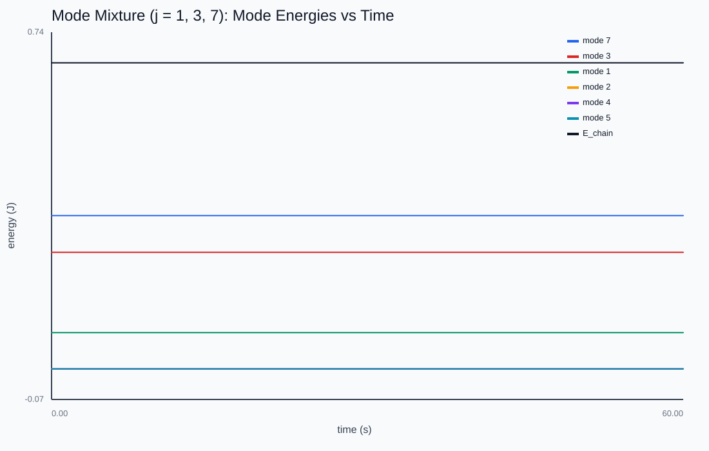

The Fourier View
Is there a basis in which the coupled chain becomes N independent oscillators — and what does the energy in each mode tell us?
The top panel is the chain; the bottom is its live mode-energy spectrum. Energy stays locked in each mode (decoupled oscillators) — a triangle pluck lights up only the odd modes, falling off like 1/j².

Diagonalizing the chain
Project the chain onto orthonormal sine mode shapes φ_j(n) = √(2/(N-1)) sin(πjn/(N-1)). Each modal amplitude obeys a_j'' = -ω_j² a_j — a plain harmonic oscillator, completely decoupled from every other mode. The coupling in the position basis was an illusion of coordinates.

Parseval, exactly
Because the mode shapes are orthonormal and the Hamiltonian is diagonal in this basis, total energy splits exactly into a sum of per-mode energies. That identity is the lab's correctness check: if the mode energies don't sum to the chain's total, the projection is wrong.

Why a string holds its tone
In an undamped run each mode's energy is constant in time — energy does not leak between modes. That is precisely what "decoupled oscillators" means, and it is why a struck string keeps its timbre instead of decaying into noise. The triangle pluck's 1/j² odd-mode falloff is the same spectrum that makes a guitar sound musical.

This chapter is drawn from the physics-lab study notes and renders. The longer write-ups and project essays live on the blog.